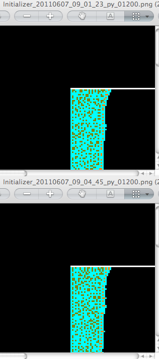
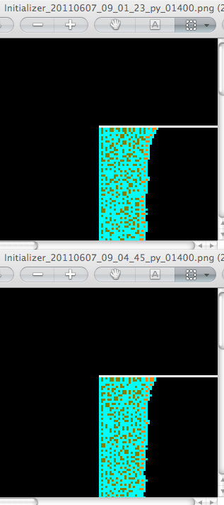
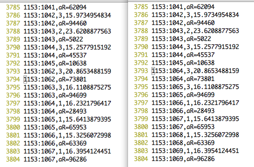
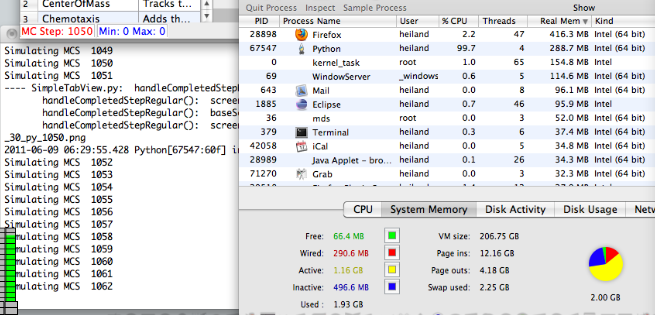

heiland@dhcp-cs-244-118:~/dev/Glazier/cc3d-6-6-11$ !py python diffem.py diff MouseLimb_Simulation_20110607_09_01_23/Initializer_20110607_09_01_23_py_00000.png MouseLimb_Simulation_20110607_09_04_45/Initializer_20110607_09_04_45_py_00000.png diff MouseLimb_Simulation_20110607_09_01_23/Initializer_20110607_09_01_23_py_00050.png MouseLimb_Simulation_20110607_09_04_45/Initializer_20110607_09_04_45_py_00050.png ... diff MouseLimb_Simulation_20110607_09_01_23/Initializer_20110607_09_01_23_py_01150.png MouseLimb_Simulation_20110607_09_04_45/Initializer_20110607_09_04_45_py_01150.png diff MouseLimb_Simulation_20110607_09_01_23/Initializer_20110607_09_01_23_py_01200.png MouseLimb_Simulation_20110607_09_04_45/Initializer_20110607_09_04_45_py_01200.png Binary files MouseLimb_Simulation_20110607_09_01_23/Initializer_20110607_09_01_23_py_01200.png and MouseLimb_Simulation_20110607_09_04_45/Initializer_20110607_09_04_45_py_01200.png differ diff MouseLimb_Simulation_20110607_09_01_23/Initializer_20110607_09_01_23_py_01250.png MouseLimb_Simulation_20110607_09_04_45/Initializer_20110607_09_04_45_py_01250.png Binary files MouseLimb_Simulation_20110607_09_01_23/Initializer_20110607_09_01_23_py_01250.png and MouseLimb_Simulation_20110607_09_04_45/Initializer_20110607_09_04_45_py_01250.png differ ...
<

On the left is MCS 1200; right is 1400

Looking at debug prints (after calc of random vars) from 2 different sims. Divergence starts at line 3793, printing: mcs:cell#, celltype, targetVol. Therefore, the cell# is different. From:
253 for cell in self.cellList: 254 cellNum += 1 255 mouselimb_attributes=CompuCell.getPyAttrib(cell) 256 self.concdict=dict([fieldname, self.fielddict[fieldname].get(int(cell.xCM/(float(cell.volume)*lmfLength*xSc ale)),int(cell.yCM/(float(cell.volume)*lmfLength*yScale)),int(cell.zCM/(float(cell.volume)*lmfLength*zScale)))] for fie ldname in self.fielddict) 257 258 ##### To Be Implemented: 259 ##### 1) DHAND reduces apoptosis 260 261 ####### Growth Behaviors BEGIN###### 262 if cell.type==1 or cell.type==2 or cell.type==3: 263 if cell.targetVolume<25: 264 cell.targetVolume+=.02 *random.randint(0,1) 265 if mcs>1150 and mcs<1202: self.outfile.writelines(str(mcs)+':'+str(cellNum)+','+str(cell.type) + ','+str(cell.targetVolume)+'\\n')
Thought it might be memory exhaustion problems, but doesn't seem to be. Did another run, watching the system memory the entire time - no problem.
<
diff MouseLimb_Simulation_20110608_01_47_12/Initializer_20110608_01_47_12_py_1150.png MouseLimb_Simulation_20110609_05_53_30/Initializer_20110609_05_53_30_py_1150.png diff MouseLimb_Simulation_20110608_01_47_12/Initializer_20110608_01_47_12_py_1200.png MouseLimb_Simulation_20110609_05_53_30/Initializer_20110609_05_53_30_py_1200.png Binary files MouseLimb_Simulation_20110608_01_47_12/Initializer_20110608_01_47_12_py_1200.png and MouseLimb_Simulation_20110609_05_53_30/Initializer_20110609_05_53_30_py_1200.png differ diff MouseLimb_Simulation_20110608_01_47_12/Initializer_20110608_01_47_12_py_1250.png MouseLimb_Simulation_20110609_05_53_30/Initializer_20110609_05_53_30_py_1250.png Binary files MouseLimb_Simulation_20110608_01_47_12/Initializer_20110608_01_47_12_py_1250.png and MouseLimb_Simulation_20110609_05_53_30/Initializer_20110609_05_53_30_py_1250.png differ
heiland@129-79-58-155:~/dev/Glazier/cc3d-6-6-11$ diff random_params1.dat random_params3.dat |head -100 3793,3876c3793,3876 < 1153:1062,3,20.8653488159 < 1153:1062,aR=73801 < 1153:1063,3,16.1108875275 < 1153:1063,aR=94699 ... --- > 1153:1064,3,20.8653488159 > 1153:1064,aR=73801 > 1153:1065,3,16.1108875275 > 1153:1065,aR=94699 ...
Just printing out the len of the cellList, we find they are different between 2 non-overlapping runs, at MCS 1154:
heiland@dhcp-cs-244-118:~/dev/Glazier/cc3d-6-6-11$ diff random_paramsA.dat random_paramsB.dat |head 1155c1155 < MLCBehaviors::step: mcs=1154, len(self.cellList)=1146 --- > MLCBehaviors::step: mcs=1154, len(self.cellList)=1145 1181,1260c1181,1260